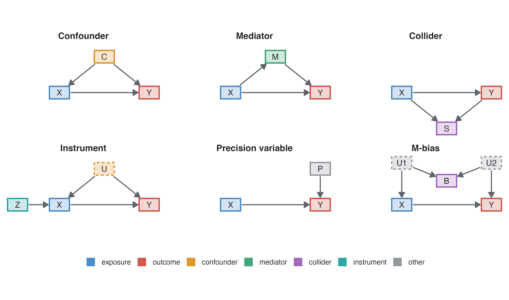
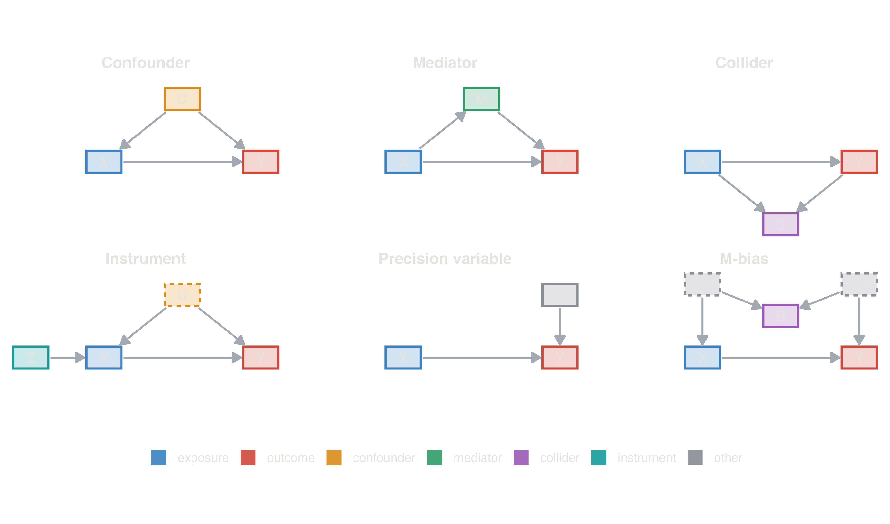
Epidemiology guide, part 4
A regression model adjusts for whatever variables it is given, and it cannot tell a confounder from a mediator or a collider. That knowledge comes from outside the data: what causes what, and in what order. A directed acyclic graph (DAG) writes it down, so that the choice of adjustment variables follows from explicit assumptions that others can check and dispute (Greenland et al. 1999; Shrier and Platt 2008; Hernán and Robins 2020).
Associations travel along paths. A path is open (it transmits association) unless it contains a collider, or a non-collider that has been adjusted for. Adjusting for a collider opens the path through it.


| variable | what it is | adjust for it to estimate the total effect of X? |
|---|---|---|
| Confounder | a common cause of X and Y (or lies on a backdoor path) | yes: it opens a backdoor path X ← C → Y |
| Mediator | caused by X, causes Y | no: it carries part of the effect; adjusting gives the direct effect, which is a different question (Mediation) |
| Collider | caused by X and by Y (or by their causes) | no: adjusting, stratifying or selecting on it creates an association |
| Instrument | causes X, affects Y only through X | no: it adds no protection and inflates the variance; with unmeasured confounding it amplifies the bias |
| Precision variable | causes Y, unrelated to X | optional: it narrows confidence intervals (linear models) and changes OR/HR to their conditional value |
| Descendant of Y | caused by the outcome | no: it acts as a collider |
| Effect modifier | the effect of X differs across its levels | a result to report by level, not something to adjust away; a DAG does not show it |
The M-bias panel shows the subtle case. B is associated with both X and Y, so the old “associated with exposure and outcome” rule would make it a confounder. But B is a collider of two unmeasured causes, and adjusting for it opens the path X ← U1 → B ← U2 → Y. Only the diagram tells the two situations apart.
Small studies, one per kind of variable (two for confounders), each simulated with a few lines of code so that the true effect is known exactly. The outcome is always a continuous measure analysed with linear regression, so the estimates are easy to compare: a coefficient is the change in the outcome per unit of the exposure. Each table gives the true effect, the crude estimate and the estimate adjusted for the third variable, with 95% confidence intervals.
Smokers drink more coffee, and smoking raises blood pressure. Coffee itself has no effect.
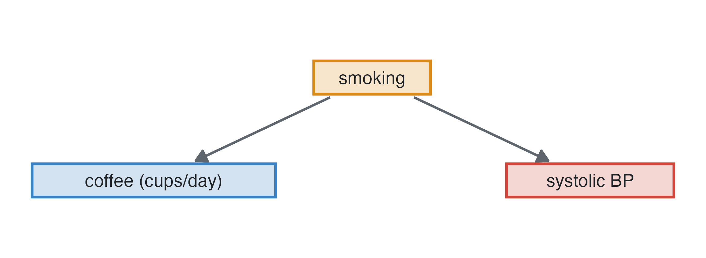
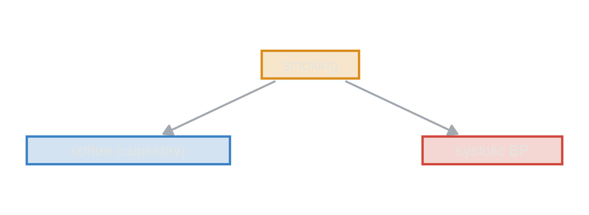
| estimate (95% CI) | |
|---|---|
| true effect | 0.00 |
| crude | 1.57 (1.29 to 1.85) |
| adjusted for smoking | -0.18 (-0.51 to 0.15) |
What adjusting does: the crude analysis finds about 1.5 mmHg per cup, all of it borrowed from smoking. Adjusting for the confounder closes the backdoor path and the estimate falls to the truth, zero.
Confounding does not always create an effect; it can also hide one. Salt raises blood pressure (+2 mmHg per g/day), and so does age (+0.45 mmHg per year). But younger people eat more salt, so people with a high salt intake are younger and, for that reason alone, have lower blood pressure.
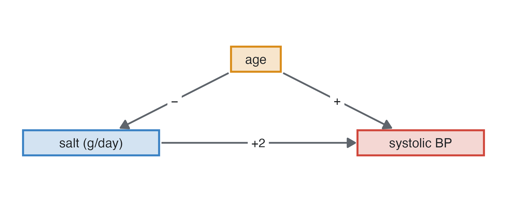
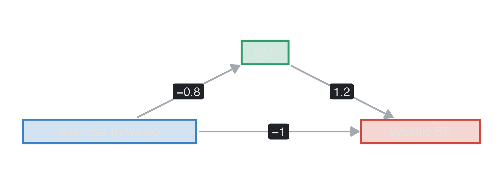
| estimate (95% CI) | |
|---|---|
| true effect | 2.00 |
| crude | 0.00 (-0.17 to 0.17) |
| adjusted for age | 2.22 (1.99 to 2.44) |
What adjusting does: the crude analysis finds no effect of salt at all; adjusting for age reveals it. The direction of confounding bias is the product of the signs of the confounder’s two arrows: here (age → salt: −) × (age → blood pressure: +) = −, so the crude estimate is pulled down, towards zero or past it. Two positive or two negative arrows exaggerate an effect (as smoking did for coffee); opposite signs mask it. A null crude association is therefore no reason to drop an exposure before adjusting.
Exercise lowers blood pressure directly (−1 mmHg per hour a week) and by lowering BMI (−0.8 kg/m² per hour, each kg/m² adding 1.2 mmHg). Its total effect is −1 + (−0.8 × 1.2) = −1.96 mmHg per hour.
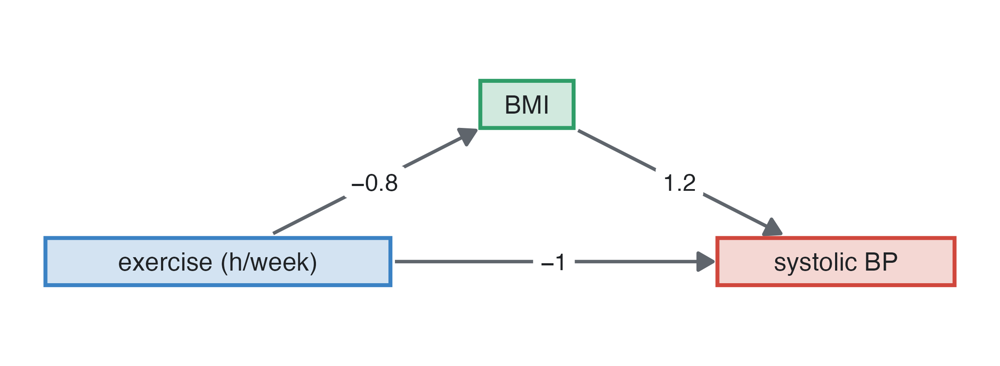
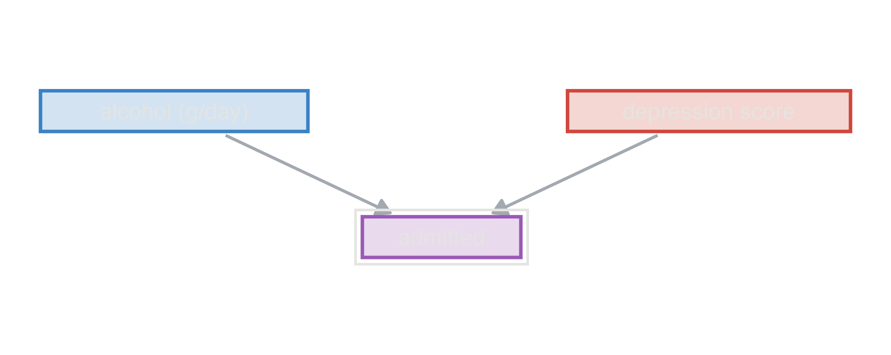
| estimate (95% CI) | |
|---|---|
| true total effect | -1.96 |
| true direct effect | -1.00 |
| crude | -1.80 (-2.04 to -1.57) |
| adjusted for BMI | -0.97 (-1.22 to -0.72) |
What adjusting does: the crude estimate is the total effect. Adjusting for BMI removes the part that goes through it and leaves the direct effect. Both are correct answers to different questions; if the question is “how much does exercise lower blood pressure?”, do not adjust for BMI.
Alcohol intake and depression are unrelated here, but both make admission to hospital more likely. A study of inpatients, or a model that includes admission, conditions on the collider.
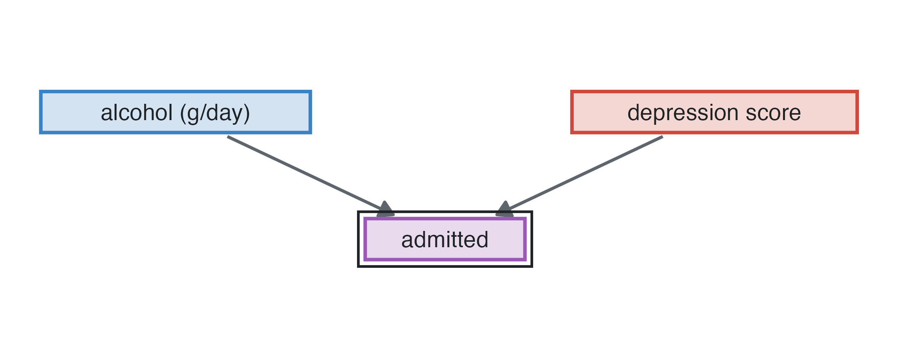

| estimate (95% CI) | |
|---|---|
| true effect | 0.00 |
| crude, everybody | 0.03 (-0.05 to 0.10) |
| adjusted for admission | -0.19 (-0.27 to -0.12) |
| only admitted patients | -0.17 (-0.26 to -0.08) |
Estimates per 10 g/day of alcohol. What adjusting does: in everybody there is no association. Among the admitted, a patient who drinks little must have been admitted for something else, depression for instance, so alcohol and depression appear negatively related. Adjusting for the collider creates bias where there was none (Berkson’s bias).
Owning a dog makes people walk more and has no other effect on blood pressure (an instrument). Health consciousness, unmeasured, makes people walk more and lowers their blood pressure (an unmeasured confounder). Each 1,000 daily steps lowers systolic pressure by 1 mmHg.
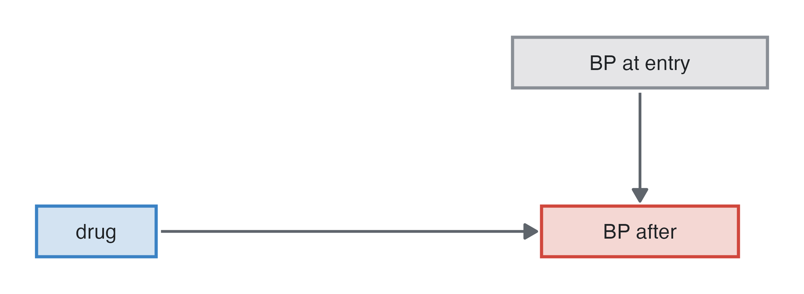
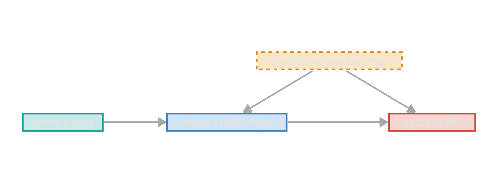
| estimate (95% CI) | |
|---|---|
| true effect | -1.00 |
| crude | -2.44 (-2.62 to -2.27) |
| adjusted for dog ownership | -3.18 (-3.39 to -2.97) |
What adjusting does: the crude estimate is confounded by health consciousness. Adjusting for the instrument makes it worse: it removes the part of walking explained by the dog, the part that was unconfounded, so the remaining variation in walking is more confounded (bias amplification), and the interval is wider. An instrument is not a confounder; it is useful in a different analysis (instrumental variable estimation), not as a covariate.
A randomised trial of an antihypertensive in 200 patients: the drug lowers pressure by 8 mmHg, and pressure at entry strongly predicts pressure at the end. Randomisation means entry pressure is not associated with the drug.

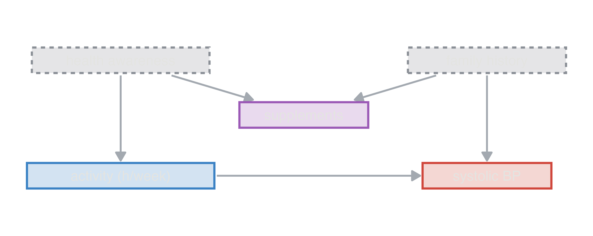
| estimate (95% CI) | |
|---|---|
| true effect | -8.00 |
| crude (t-test) | -7.02 (-10.97 to -3.07) |
| adjusted for entry BP (ANCOVA) | -6.96 (-9.48 to -4.43) |
What adjusting does: both estimates are unbiased; the adjusted one has a confidence interval about a third narrower, as if the trial were more than twice as large. Adjusting for strong predictors of the outcome is free precision, in trials and in observational studies. (With logistic or Cox models it also moves the odds or hazard ratio from marginal to conditional; see Measures and models.)
Physical activity lowers blood pressure (−1 mmHg per hour a week). Health awareness (unmeasured) increases activity and supplement use; a family history of hypertension (unmeasured) raises blood pressure and also leads to taking supplements. Supplement use is associated with activity and with blood pressure, but it is a collider of two causes that are otherwise unrelated.
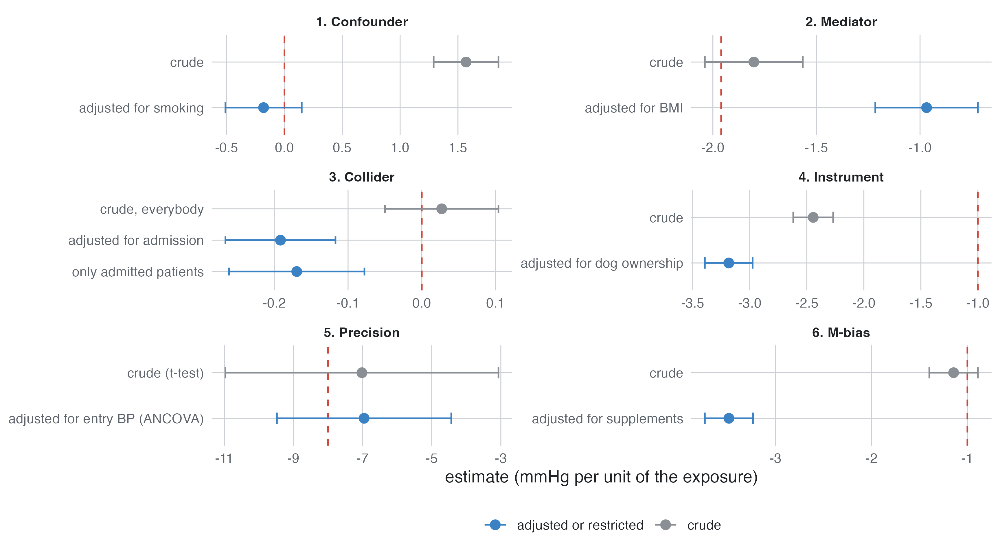

| estimate (95% CI) | |
|---|---|
| true effect | -1.00 |
| crude | -1.14 (-1.40 to -0.89) |
| adjusted for supplements | -3.49 (-3.74 to -3.24) |
What adjusting does: the crude estimate is right, because there is no backdoor path. Adjusting for supplement use opens the path activity ← awareness → supplements ← family history → blood pressure, and the estimate becomes more than three times the true effect. The rule “adjust for whatever is associated with exposure and outcome” fails here; only the diagram tells this case from confounding.
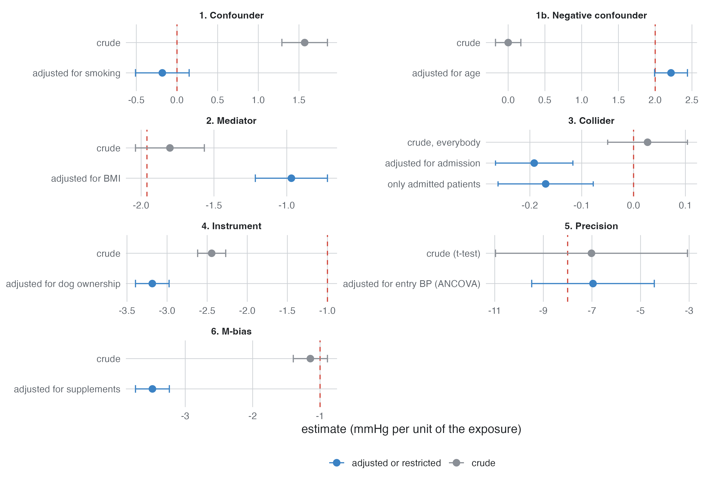
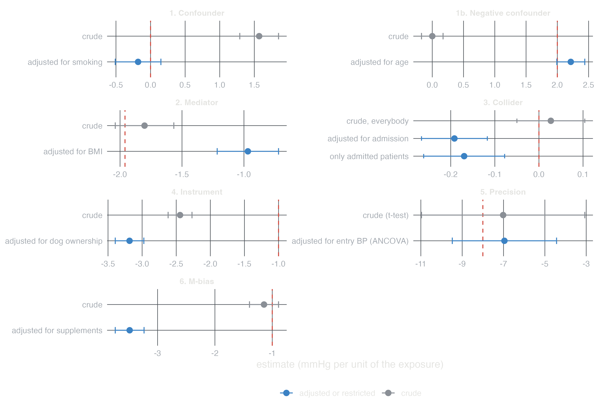
Three of the structures again, now in the module’s own scenarios, with the answer key’s expected estimates.
Confounding (Coronary heart disease incidence, cohort): coffee has no effect, but smokers drink more coffee. The crude hazard ratio of coffee is above 1; adjusting for smoking removes it.
| Variable | Contrast | True | direct | total | Crude | Adjusted (all) | Adjusted (DAG) | Estimate |
|---|---|---|---|---|---|---|---|---|
| age | per 1 years | HR | 1.05 | 1.07 | 1.07 | 1.07 | 1.07 | HR |
| sex | male vs female | HR | 1.60 | 1.76 | 1.77 | 1.79 | 1.79 | HR |
| smoking | former vs never | HR | 1.20 | 1.21 | 1.21 | 1.20 | 1.21 | HR |
| smoking | current vs never | HR | 1.60 | 1.81 | 1.76 | 1.75 | 1.78 | HR |
| coffee | per 1 cups/day | HR | 1.00 | 1.00 | 1.08 | 1.01 | 1.01 | HR |
Mediation: sex acts on coronary disease partly through HDL. Adjusting for HDL gives the direct effect (1.60). Leaving it out gives the total effect (1.76). Neither is wrong; they answer different questions.
Collider (Lung cancer and smoking, case-control, Biases ▸ Add a variable caused by outcome and exposure): admitted is caused by lung cancer and by smoking. A model that includes it (Adjusted (all)) underestimates the effect of smoking; the diagram’s set leaves it out (Adjusted (DAG)).
| Variable | Contrast | True | direct | total | Crude | Adjusted (all) | Adjusted (DAG) | Estimate |
|---|---|---|---|---|---|---|---|---|
| age | per 1 years | HR | 1.09 | 1.09 | 1.09 | 1.09 | 1.09 | OR |
| sex | male vs female | HR | 1.20 | 2.46 | 2.70 | 1.25 | 2.72 | OR |
| smoking | former vs never | HR | 4.00 | 4.00 | 4.06 | 3.20 | 3.87 | OR |
| smoking | 1-14 vs never | HR | 7.70 | 7.70 | 8.09 | 6.20 | 7.63 | OR |
| smoking | 15-24 vs never | HR | 13.70 | 13.70 | 14.73 | 11.09 | 13.44 | OR |
| smoking | 25+ vs never | HR | 24.50 | 24.50 | 28.28 | 20.98 | 25.15 | OR |
The question: what is the effect of body mass index on the 10-year risk of coronary heart disease?
dagitty (Textor et al. 2016).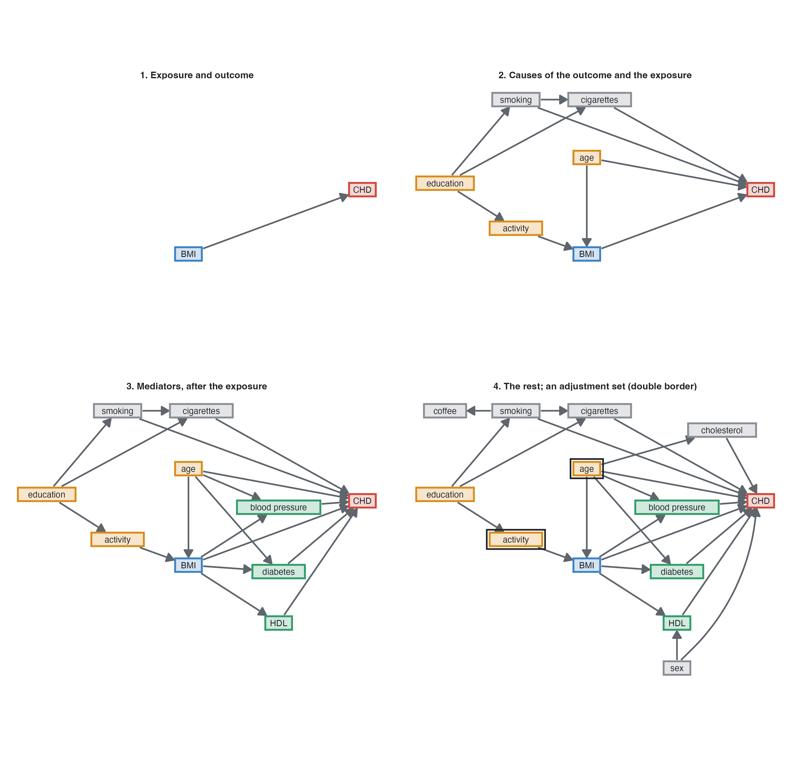
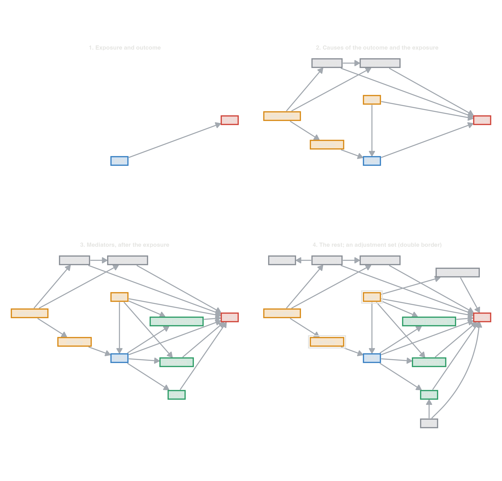
The backdoor paths from BMI are BMI ← age → … → CHD and BMI ← activity ← education → smoking → CHD. Adjusting for {age, activity} blocks both, and so does {age, education}. Adding sex and cholesterol is harmless. Adding blood pressure, HDL or diabetes is not: they are on the causal path, so the model would estimate only the part of BMI’s effect that does not go through them.
| adjusted for | HR per 5 kg/m2 |
|---|---|
| none (crude) | 1.42 |
| age, physical activity (minimal set) | 1.34 |
| age, education (minimal set) | 1.34 |
| every variable BMI does not cause | 1.35 |
| everything, mediators included | 1.12 |
In a simulated cohort of 60,000, every valid set gives about the true total effect, a hazard ratio of 1.33 per 5 kg/m². Adjusting for the mediators gives the direct effect, 1.1, which leaves out the part of BMI’s harm that works by raising blood pressure, lowering HDL and causing diabetes. The crude estimate is confounded.
Papers often show one multivariable model with a coefficient for every variable (“Table 2”) and interpret each as that variable’s effect. Each coefficient is adjusted for all the others, including that variable’s mediators, and its confounders may be missing. Only the coefficient of the exposure the model was built for has the meaning intended (Westreich and Greenland 2013). In the CHD model with every variable, age’s coefficient is its direct effect (net of blood pressure, cholesterol and diabetes), and education seems to do nothing. In fact education acts through smoking and activity. studysim’s answer key shows both columns:
| Variable | Contrast | True | direct | total | Crude | Adjusted (all) | Adjusted (DAG) | Estimate |
|---|---|---|---|---|---|---|---|---|
| age | per 1 years | HR | 1.05 | 1.07 | 1.07 | 1.05 | 1.07 | HR |
| sex | male vs female | HR | 1.60 | 1.76 | 1.77 | 1.61 | 1.80 | HR |
| education | secondary vs primary | HR | 1.00 | 0.94 | 0.90 | 0.96 | 0.90 | HR |
| education | university vs primary | HR | 1.00 | 0.90 | 0.89 | 1.00 | 0.88 | HR |
| physical_activity | per 1 MET-h/week | HR | 1.00 | 0.99 | 0.99 | 1.00 | 0.99 | HR |
| smoking | former vs never | HR | 1.20 | 1.21 | 1.21 | 1.20 | 1.20 | HR |
| smoking | current vs never | HR | 1.60 | 1.81 | 1.76 | 1.79 | 1.79 | HR |
| bmi | per 1 kg/m2 | HR | 1.02 | 1.06 | 1.07 | 1.02 | 1.06 | HR |
| sbp | per 10 mmHg | HR | 1.18 | 1.18 | 1.34 | 1.17 | 1.17 | HR |
| hdl | per 1 mmol/L | HR | 0.60 | 0.60 | 0.41 | 0.60 | 0.60 | HR |
| diabetes | yes vs no | HR | 1.80 | 1.80 | 2.94 | 1.89 | 1.89 | HR |
Each exposure needs its own adjustment set, and often its own model.
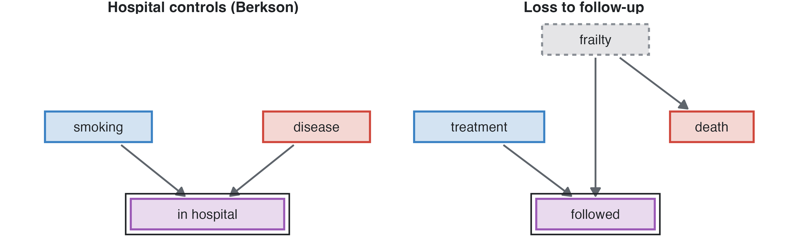
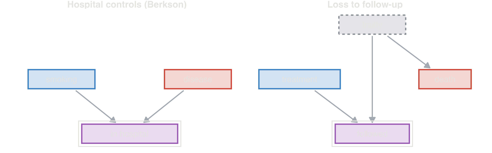
Restricting a study to a group of people is conditioning on whatever put them in it. When getting in depends on the exposure and on the outcome (or its causes), the selection node is a collider, and the study finds an association that does not exist in the population (Hernán et al. 2004). The same structure explains biased hospital controls, informative losses to follow-up and analyses of complete cases. studysim builds these on purpose (Biases). Two more problems are diagrammed the same way: measurement error, a measured X* caused by X, and immortal time, a treatment that can only start among those who survive.
When the full diagram is uncertain, a practical rule (VanderWeele 2019):
Then check: with how many events per parameter will the model be fitted? A large adjustment set in a small study is unstable (Measures and models). Prefer the smallest valid set, plus strong predictors of the outcome.
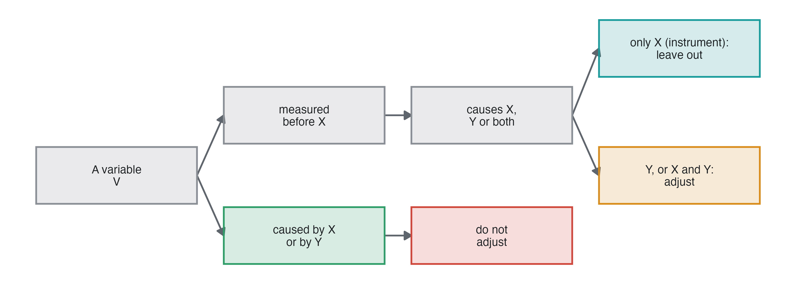
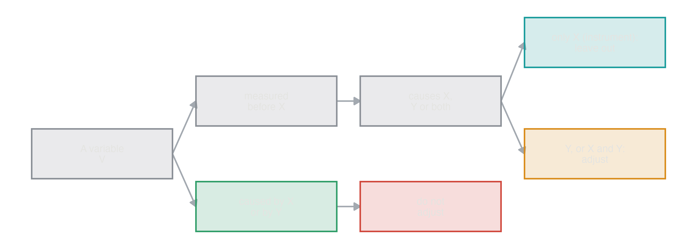
A DAG shows which variables cause which, not how their effects combine. Two variables with arrows into Y may act additively, multiplicatively or only together, and the diagram looks the same. Effect modification is a feature of the effect of X, reported within levels of the modifier (Measures and models).
admitted and explain why adjusting for it underestimates the effect.